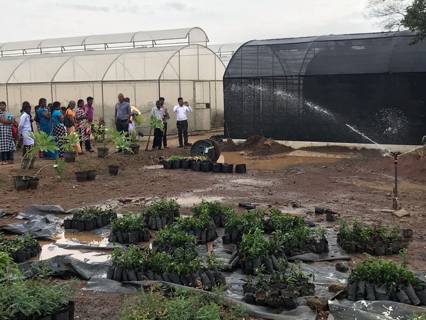
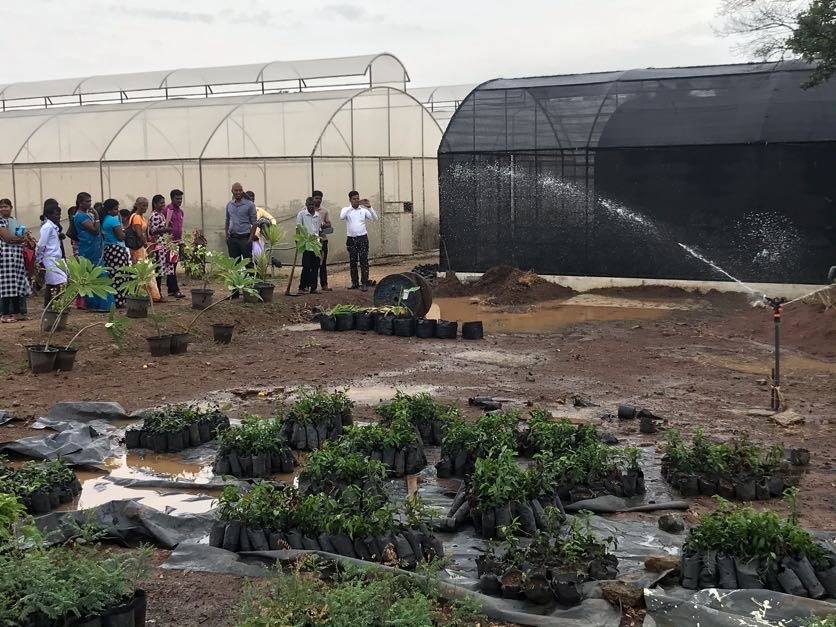

As part of the conference on Soil Additives—Contemporary Practices for Sustainable Agriculture, Dr. Zohar Ben-Simhon, Director of the Agricultural Farm Unit -Field crops and orchards at Newe Ya’ar, moderated a panel for practicing farmers, professionals and researchers. Participants included Mr. Ofer Haklai of Moshav Arbel and Mr. Nir Garzon of Kibbutz Ein Harod (Meuhad); Mr. Uri Adler, vegetable counsellor at the Israel Bio-Organic Agriculture Association and the Plant Council; senior researchers Professor Abraham Gamliel of the Institute for Agricultural Engineering, Volcani Center, and head of Agricultural Research, and Dr. Gil Eshel of the Soil Erosion Research Station at the Ministry of Agriculture’s Department of Soil Conservation and Drainage.
MAKE APPOINTMENT“The lands I cultivate are situated along the hillslope and all the runoff from the fields above mine flows down to my plots. This calls for a regional solution that requires all surrounding farmers to cooperate. A local solution will not help because the downflow is very powerful. In our moshav, we created a solution that we are now trying to expand to neighboring farming communities too. One affects the other, the urban communities and the roads affect us all. The runoff issue requires a comprehensive solution that will also address the lands the water flows down from and not only those on the receiving end of it. Regarding my own lands, I understood that as a first stage I must take measures to stop the soil erosion, so I planted oats in my orchard. Since I also raise bees, I consulted with Jonathan Abrahams from the Soil Conservation and Drainage Department regarding cover plants that would also be of utility to the bees..
As far as bees are concerned, agricultural areas are a green desert of sorts: it blooms for two to four weeks a year, and is barren the rest of the year. When farmers bring bees to their fields, very often they experience a ‘collapse’ in the hives because all the surrounding vegetation is sprayed. I approached this from the other direction: I looked for ways to facilitate early blooming so that I could introduce the beehives at a timing convenient for me, instead of waiting until access routes are filled with mud and are difficult to maneuver. It turns out that when orchards aren’t sprayed, caring for the beehives is certainly possible. In terms of cover plants, I tried sowing various clovers but these did not turn out well. Ultimately, the local wildflowers succeeded: senecios, calendula and early-blooming flowers. Until last summer, I didn’t even know how good my practice was. Recently, Dr. Eshel, who studies soil conservation and drainage, noted the soil in my orchard was very good and well ventilated. Eventually, I planted trees along the edges of my orchards that border with uncultivated lands—both for the bees as well as to compensate nature for the spraying and other agrotechnical activities. I know I will see the full reward for this in the future.”
Unlike other deciduous trees, almonds are extremely attractive– virtually unrivalled when flowering. This means that when almond trees are in bloom, there are barely any bees to be seen on the competing flowers, even those considered attractive for bees. They will usually abandon the yellow wildflowers, such as the senecios, calendula and even the mustard-seed. Moreover, I think it strengthens the beehives. I benefit from this as an orchard farmer, because this means there are more bees to collect more pollen. When other farmers have four or five honeycombs, I’m already building a second story. I think it’s well worth it for orchard farmers to strike a deal with beekeepers. Something along the lines of ‘I have cover plants– bring me double the beehives and both of us will profit.’” Does having cover plants reduce feeding the bees during winter? “During the winter I give the bees very little sugar, mostly as a medium for medication.”
The oats self-seeded repeatedly but started to wane as the wildflowers took over. Essentially what happened here was a succession process, with oats serving as the first locals that received the newcomer species
The second thing I did (after the cover plants) is creating contour banks to stop water erosion along the slope. They run through my orchards and also through the passages between the plots (as seen in the photo below). I even succeeded in getting the farmers upslope from my orchards to cooperate, and they too have made contour banks in their fields. In the crop fields, the contours are created to accommodate the width of the machinery used; they’re also graded more moderately so as not to interfere with tillage. I use a grader in the depression between the rows to create the contour banks at the bottom of the depression at 30-meter intervals and at a moderate grade to allow driving through and between.” Photo Caption: Two roads in proximity (100 meters apart) along the same slope after heavy rainfall. The right-hand-side photograph shows a “regular” road with considerable water erosion; the left-hand-side photograph shows a road with contour banks across it preventing water erosion of the soil.